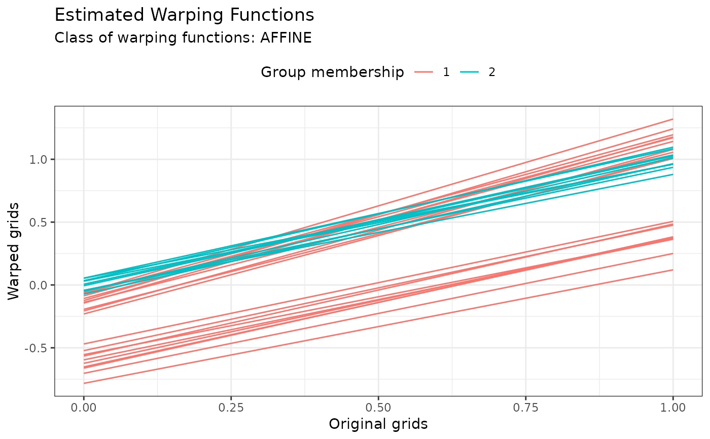

Plot for kmap objects
# S3 method for kma plot(x, type = "data", number_of_displayed_points = 50, ...)
Arguments
| x | The kma object to be plotted. |
|---|---|
| type | A string specifying the type of information to display. Choices
are |
| number_of_displayed_points | The number of points to used for display. It is set as the minimum between this parameter and the number of points in the original data set. Defaults to 50. |
| ... | Other graphical parameters (see par). Ignored for now. |
Value
A ggplot object invisibly.
Examples
res <- kma( simulated30$x, simulated30$y, seeds = c(1, 21), n_clust = 2, center_method = "medoid", warping_method = "affine", dissimilarity_method = "pearson" )#> Information about the data set: #> - Number of observations: 30 #> - Number of dimensions: 1 #> - Number of points: 200 #> #> Information about cluster initialization: #> - Number of clusters: 2 #> - Initial seeds for cluster centers: 1 21 #> #> Information about the methods used within the algorithm: #> - Warping method: affine #> - Center method: medoid #> - Dissimilarity method: pearson #> - Optimization method: bobyqa #> #> Information about warping parameter bounds: #> - Warping options: 0.1500 0.1500 #> #> Information about convergence criteria: #> - Maximum number of iterations: 100 #> - Distance relative tolerance: 0.001 #> #> Information about parallelization setup: #> - Number of threads: 1 #> - Parallel method: 0 #> #> Other information: #> - Use fence to robustify: 0 #> - Check total dissimilarity: 1 #> - Compute overall center: 0 #> #> Running k-centroid algorithm: #> - Iteration #1 #> * Size of cluster #0: 20 #> * Size of cluster #1: 10 #> - Iteration #2 #> * Size of cluster #0: 20 #> * Size of cluster #1: 10 #> #> Active stopping criteria: #> - Memberships did not change.